Neurodiversity ── An Evolution of the Concept
神經多樣性的概念與演化
本場未錄音
講者（職稱逐字，手冊頁 p3）：Dr. Raymond Sui-Hing Yan 甄瑞興醫師｜台灣青少年神經多樣性行動協會理事長暨亞東紀念醫院兒少神經多樣性共照中心主任
講者簡介：手冊「講師介紹」章節（p10–p19）未列甄瑞興醫師專屬簡介頁（該章節僅收錄林育如、Barry Fell、Drew Davis、笹尾敏明四位）。可佐證的逐字資訊僅兩處：①投影片標題頁（p-021.jpg）列出四項頭銜「亞東紀念醫院兒少神經多樣性共照中心主任／台灣青少年神經多樣性行動協會理事長／美國哈佛麻州總醫院神經部研究員／國立陽明交通大學臨床副教授」；②本人以協會理事長身分撰有前言一篇（手冊頁 p6，見第五節開幕前言）。簡介欄暫以此二處逐字資訊拼接，不足 3-5 句的敘事性簡介，待錄音或另行確認補齊。
投影片大綱（起訖頁：手冊頁 p20–p40；圖檔：p-021.jpg–p-041.jpg下半；共 42 張，投影片自帶連續編號 1–42）
- 標題頁（編號1）
- 前言：「神經多樣性」詞源 1998 Harvey Blume／Judy Singer（編號2）
- 前言：神經多樣性非醫學診斷、為總稱而非明確診斷（編號3）
- 以自閉症為例：診斷名稱歷史演進九宮格時間軸（編號4，圖，文字過小待補）
- 以自閉症為例：三雲朵圖局部放大（編號5）
- 自閉症的故事：診斷名稱演進條列（編號6）
7-8. 「小洋的自白」第一人稱敘述兩張（編號7-8）
- 神經多樣性的流行病學：全球約 1/5 人口、ASD/ADHD/閱讀障礙盛行率數字（編號9）
- 台灣青中壯世代自殺死亡率剪報（2025.06.18 發布）（編號10）
11-12. 神經多樣性的歷史／神經典型人群定義（編號11-12） 13-14. 神經多樣性概念說明＋剪報＋Mercedes-Benz左右腦廣告（編號13-14） 15-16. 神經多樣性未來技能（橫向思維等）／發育障礙性質說明（編號15-16） 17-18. 神經多樣性的六項不同／傘狀總稱圖（Neurodiversity is an umbrella term）（編號17-18）
- 神經多樣性的十三項類型清單（編號19）
20-21. 神經多樣性十大警訊（1-5項、6-10項）（編號20-21） 22-25. 自閉症類群障礙：定義、24小時照護需求比例、光譜差異、「遇到一個自閉症患者就只是遇到一個」（編號22-25）
- ADHD 定義（配《TIME》雜誌封面）（編號26）
27-29. ADHD 三型症狀清單：注意力不足9項／過動6項／衝動3項（編號27-29）
- 閱讀障礙定義（編號30）
31-32. 共症輪盤圖／成年後才被發現的神經多樣性（編號31-32） 33-34. 早期介入理念／六項行動建議（聆聽、溝通、避免標籤等）（編號33-34） 35-36. 神經多樣性診斷與治療原則＋六領域對照表（編號35-36）
- 神經多樣性的著名和成功人士清單（馬斯克、安東尼·霍普金斯等）（編號37）
- 亞東醫院兒少神經多樣性共照中心成立：三項目標（編號38）
39-40. 共照中心組織架構圖（編號推定39）／115年生活陪跑師基礎概念訓練課程四項設計（115年9月14日起跑）（編號推定40）
- 共照中心目的及目標：五項圖示（跨專業評估/校園早期辨識/家庭支持/危機防治/友善城市）（編號推定41）
- 致謝結尾頁（編號42）
#### 新聞稿摘述（次級來源，無錄音；新北市政府社會局新聞稿，非逐字稿） 正文段落逐字：
台灣青少年神經多樣性行動協會理事長暨亞東兒少神經多樣性共照中心主任甄瑞興在論壇報告指出，神經多樣性不是一個醫學臨床診斷，而是一個涵蓋因大腦發育差異而有不同大腦運作方式的自閉症、ADHD、閱讀障礙、發展性協調障礙、妥瑞氏症等的統稱。美國資料顯示，約3.2%的8歲兒童被辨識為自閉症類群障礙；另有約11.4%的兒童在18歲前被診斷為ADHD，凸顯及早辨識與支持的重要性。他自嘲說，自己小時候也說不定是自閉症，只是當時醫療不發達，沒有進一步診斷出來。他也提出神經多樣性的十大警訊，包含執行功能、社交溝通困難、注意力、工作記憶問題、感官敏感、情緒調節、頑固或過度專注、重複行為或思考模式等。
（逐字，新聞與報導/ntpc_20260912_text.txt:228）
圖說逐字：
甄瑞興主任在演講中自嘲說，自己小時候也說不定是自閉症，只是當時醫療不發達，沒有進一步診斷出來。他提出神經多樣性的十大警訊。
（逐字，text.txt:247，重複於 text.txt:258）
對本盟的意義／行動項（投影片推斷，錄音後修正）：
- 甄瑞興以「總稱 vs 明確診斷」（如失智症候群類比）的框架去污名化，可作為國教盟對外說明神經多樣性≠疾病時的比喻素材。
- 共照中心「115年9月14日起跑」的生活陪跑師訓練課程與新北市社會局合作，是國教盟「台灣版生活導師」倡議（見王瀚陽前言 p7）的具體落地案例，值得追蹤後續執行成效作為政策佐證。
投影片


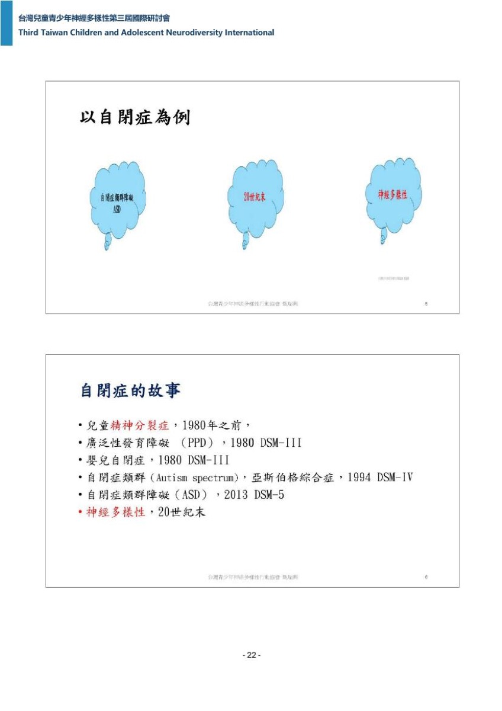
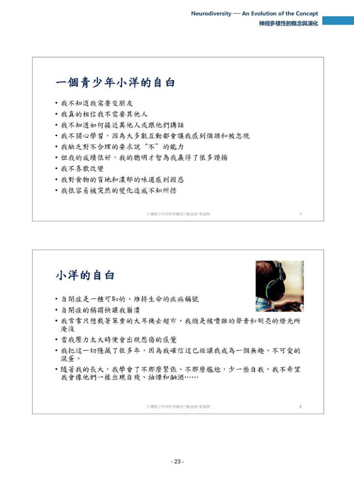
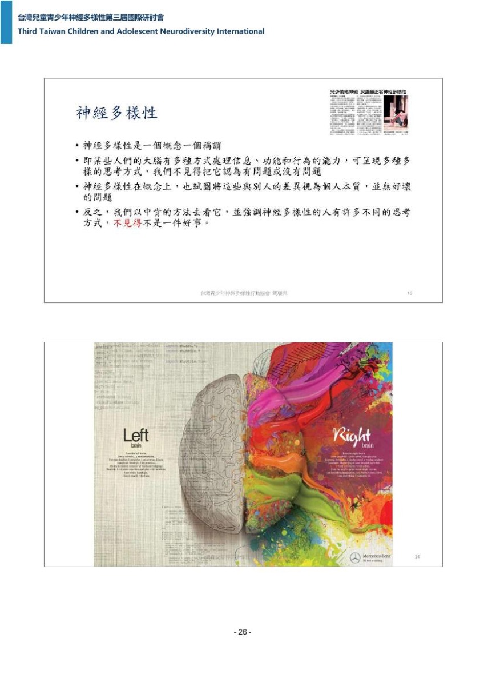


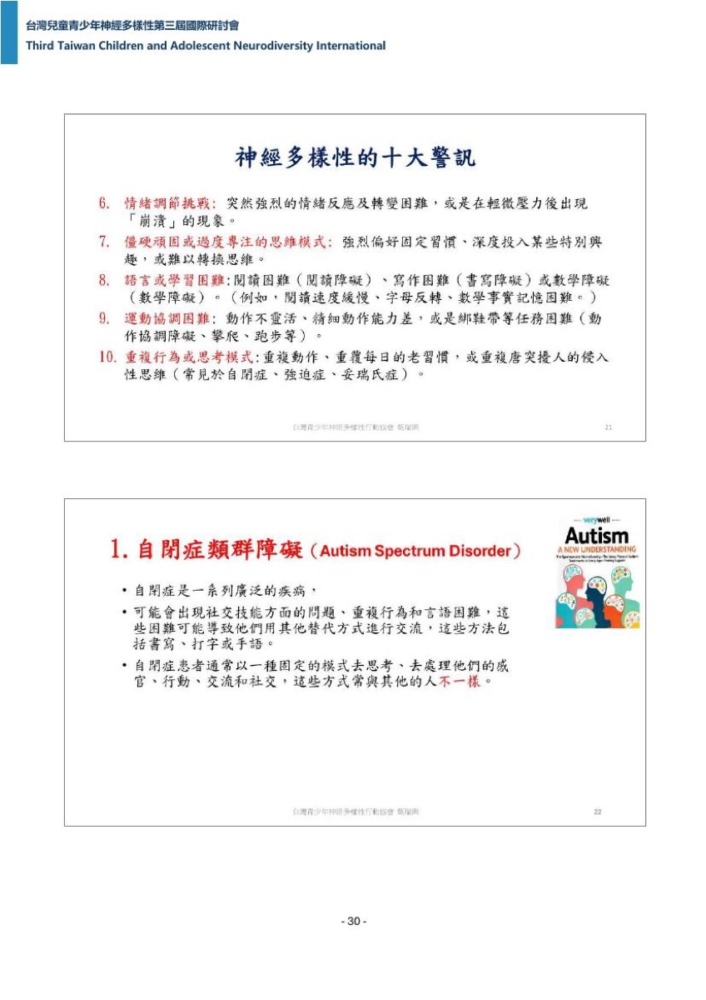


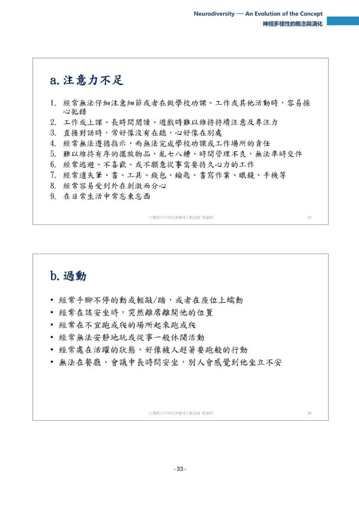
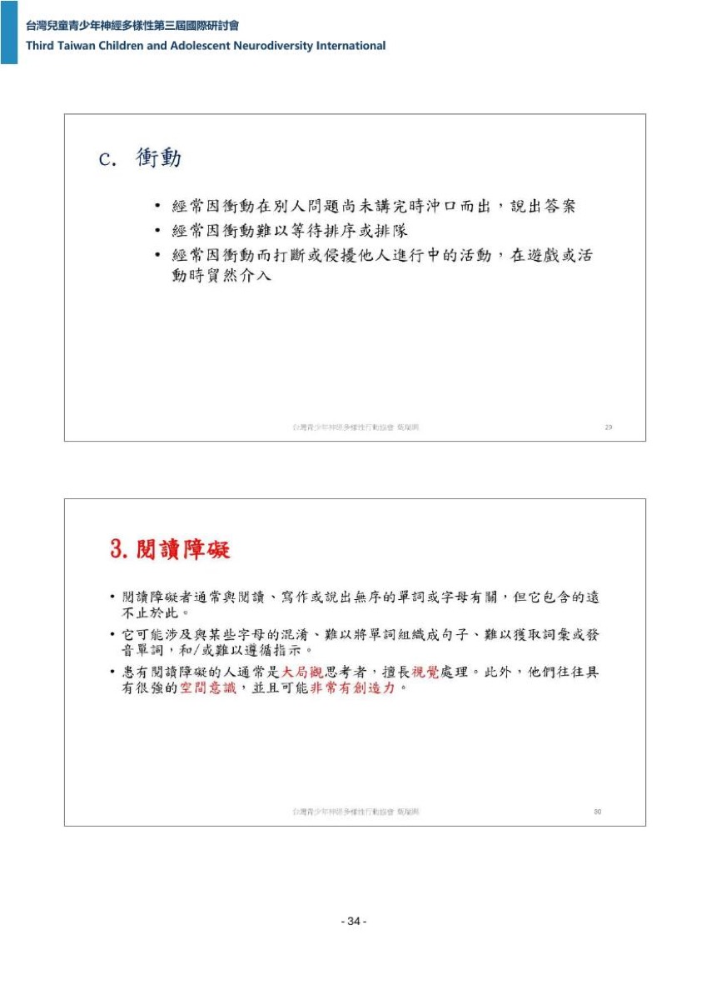
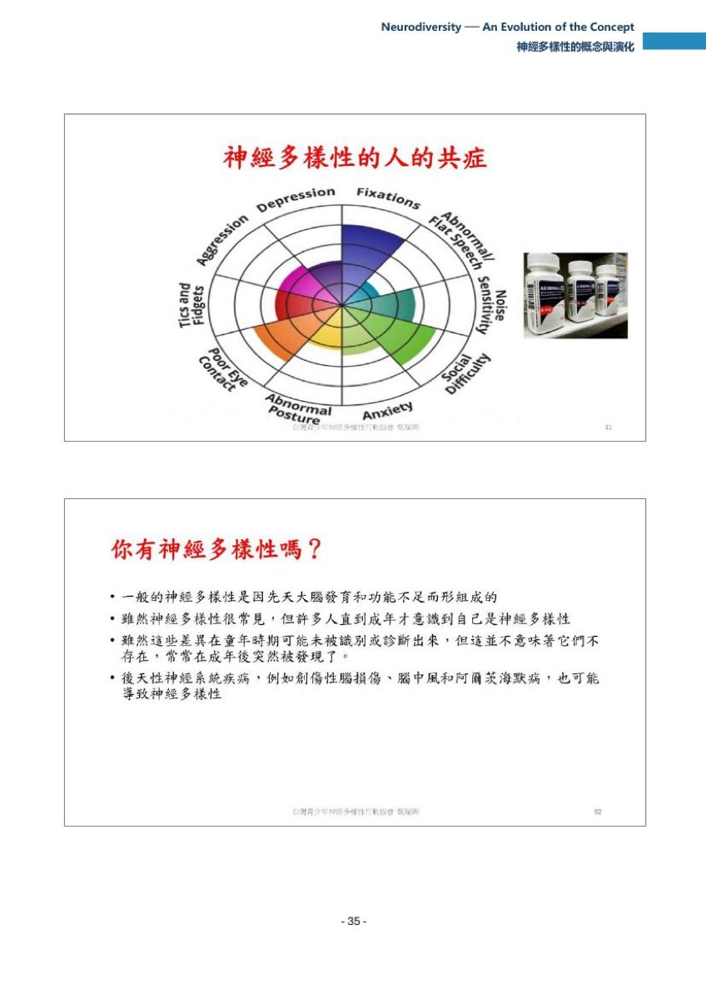
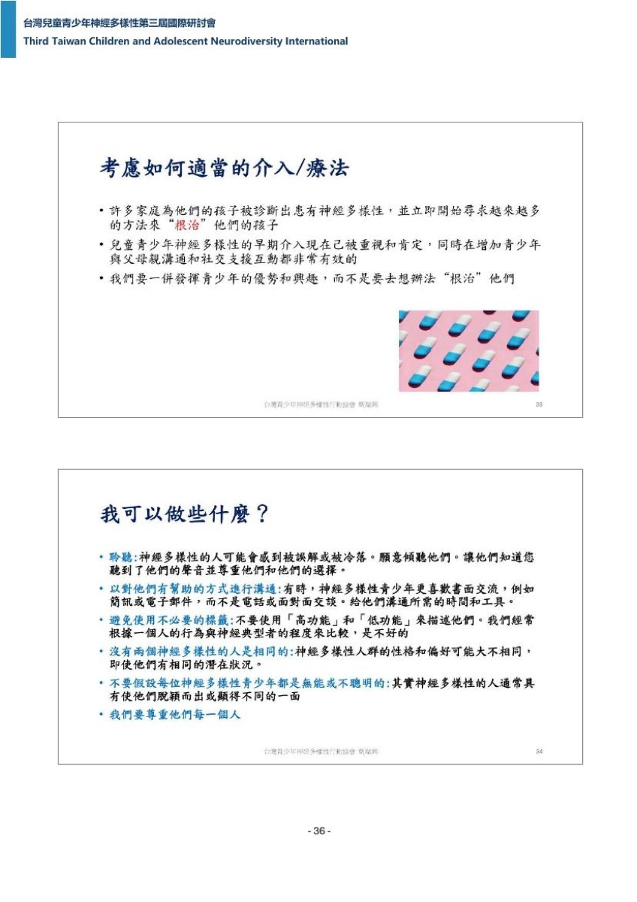
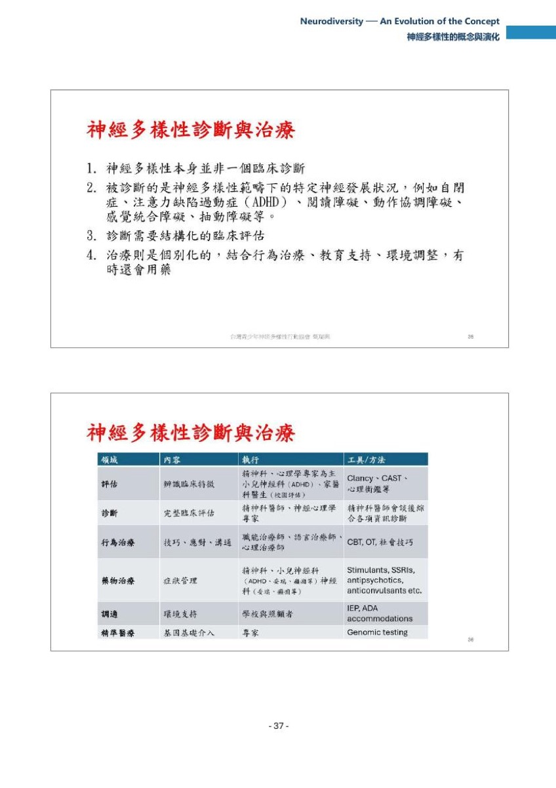
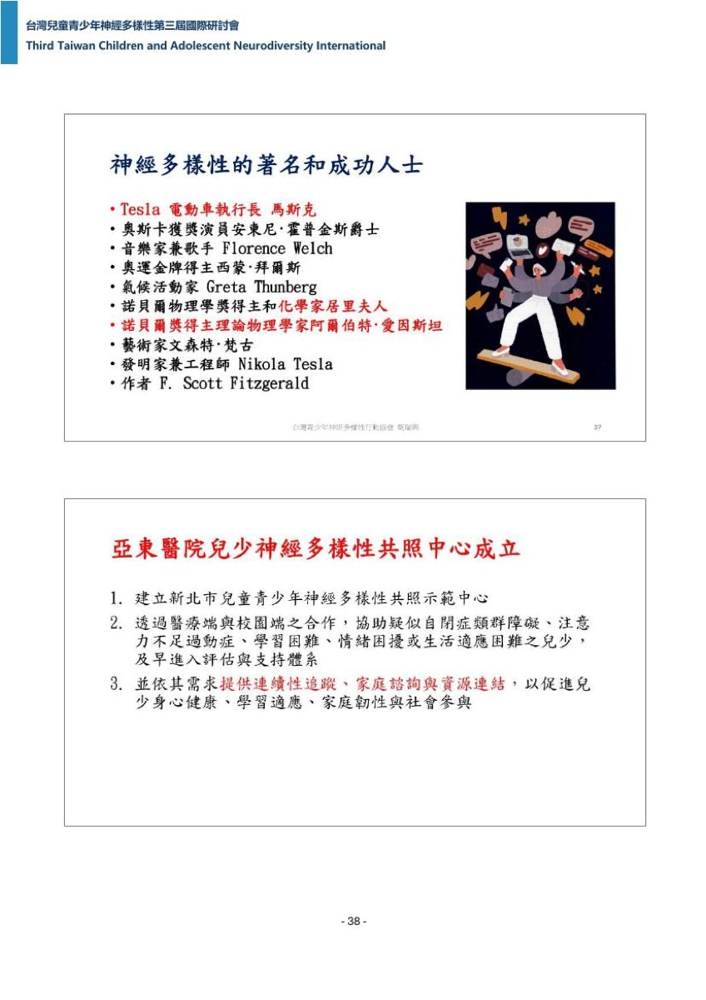
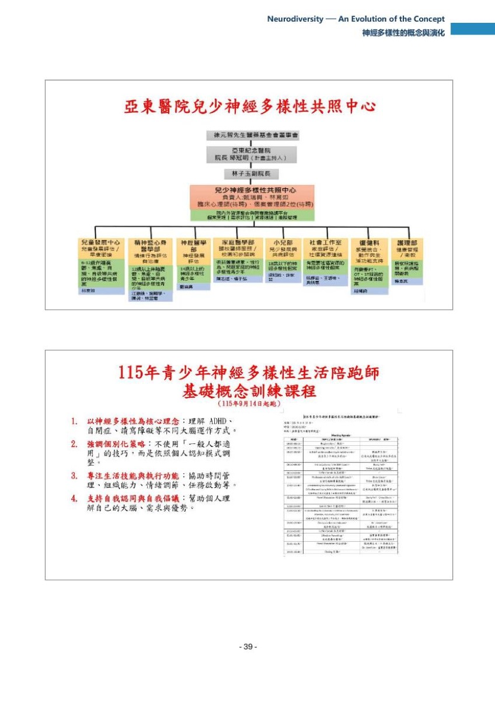